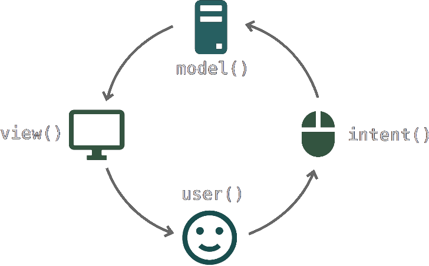

Model-View-Intent
frontend development with
Cycle.js
Tim Seckinger
 jeysal
jeysal
Model-View-Intent
frontend development with
Cycle.js
Tim Seckinger
 jeysal
jeysal
Modern Frontend Technology

Functional & Reactive
|
1 value |
0..1 values |
0..* values |
| sync, pull |
T |
T? / Optional<T> |
T[] / Array<T> |
| async, push |
Callback<T> |
Promise<T> |
Observable<T> |

https://speakerdeck.com/staltz/what-if-the-user-was-a-function
Thank You!
Tim Seckinger
 jeysal
jeysal